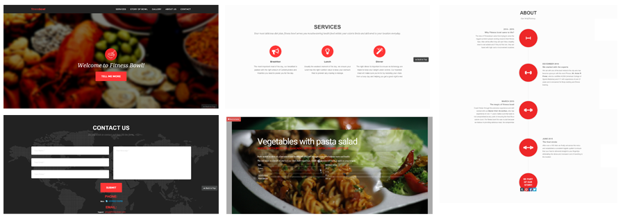

When client talked to me about developing the website to enforce his business plan, he mentioned that he had no idea about web development, UX or any of the stuff. Since I had some experience with UX design, I suggested some quick, less-expensive but reliable methods to implement his website. His main concentration was attracting customers and ofcourse awe them with "Wow".
GOAL
To design and develop a website for Fitness-Bowl, where the central aim is promotion and a user friendly way to display food images and details, and services provided by the firm.
Research
METHOD OVERVIEW

SURVEY RESULTS
90%of the respondents visited gym regularly and cared about calories
75% of the participants were ready to pay monthly for food package
The image gallery in the website was one of important criteria for buying food from online sources
Participants preferred selection of food based on calories and variety
Participants cared more about professional opinion
They did not care much about cuisine but more about taste, while concentrating on calories
COMPETITIVE ANALYSIS
PERSONA

USER FLOW

Conceptual Design
SKETCHES/EVALUATION

Conceptual design was used to create key components of the website such as about, gallery, contacts etc to generate multiple ideas. This phase is usually done using paper and pencil, we explored different possibilities for behaviour as well as some visceral concepts of the design. This was subjected to cognitive-walkthrough
DISCOVERY
Initial link as "more" was not impactful, so "Story of bowl" name was selected
The mail option was not sufficient, instead, address and contact mail was added
Services description was not visceral, instead a relevent icon and name was visceral
Tile in the about us section was better than circle display
Just location indication as user scrolls was sought after to know exact position
A quick "up" button to reach home page was sought after as well
PROTOTYPE
LOW-FIDELITY PROTOTYPE
{kind=link}
Low-fidelity prototype was created using Balsamiq - an interactive Rapid prototyping tool. This was again subjected to user-testing was finding interaction related issues.
Click here for interactive Balsamiq-Mockup
HI-FIDELITY PROTOTYPE
{kind=link}
Hi-fidelity prototype was created using Photoshop and AXURE RP. It was annotated with issues as found during the final round of user testing, which was agile in nature. Several visceral and behavioural issues were fixed after subjecting to testing.
RESPONSIVE MODE
{kind=link}
This website is responsive as well, which automatically adjusts its screen size based on the device's screen size.
TAKEAWAY
Major takeaway here was, never get too attached to your design. Yes! I had created so many innovative designs, but client declined them, either because it was too flashy, or it had complex steps involved.
Even the time matters a lot, since this had short development period, trade-off on usability was not an option. Another lesson was, how beneficial are these design thinking sessions? I say very much!
We draft MVP, client was so happy that he is being involved in all the phases. "Its just like seeing a child growing up infront of you"
- the client said.
Another takeaway was power of team work. Team work for concept design utilized so many great ideas, which ofcourse had some
usability issues. I fixed most of them. On contrast to popular notion that visually rich user interfaces hamper the experience,
this design proved beneficial for marketing and in improving customer number. My client was often told that, the gallery looks so delicious!
TOOLS
Adobe Edge Animate, Adobe Photoshop, Balsamiq, Paper Conceptual Design, Adobe Illustrator, Axure RP Pro, VISIO, Visual Studio